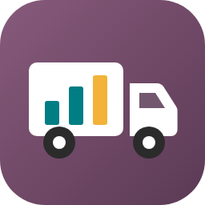

Logistics Control Dashboard
Recepciones, entregas, stock, puntualidad y próximas llegadas en una sola pantalla. Cada cifra abre exactamente los registros que la forman.
Receipts, deliveries, stock, on-time rate and upcoming arrivals on a single screen. Every figure opens exactly the records behind it.
logistics_dashboardQué muestraWhat it shows
Una pantalla, todo el almacénOne screen, the whole warehouseLo que tu equipo de logística consulta cada mañana, reunido en un único dashboard. Y sin tener que fiarse de un número: al pulsar cualquier cifra se abre la lista de albaranes, movimientos o productos que la forman.
Everything your logistics team checks every morning, gathered in a single dashboard. And no need to take a number on trust: click any figure and Odoo opens the list of transfers, moves or products behind it.
Tarjetas superioresTop cards
Recepciones y entregas pendientes y retrasadas, llegadas de esta semana e incidencias.
Pending and late receipts and deliveries, arrivals this week and issues.
OperacionesOperations
Lo que hay que hacer hoy y lo realizado en el periodo elegido.
What's due today and what was done in the selected period.
PuntualidadOn-time rate
Porcentaje de entregas y recepciones a tiempo.
Percentage of deliveries and receipts on time.
Movimientos recientesRecent moves
Las últimas entradas y salidas de stock.
The latest stock moves in and out.
StockStock
Stock y reservado por unidad de medida y por almacén, y productos bajo mínimo.
On-hand and reserved stock by unit of measure and by warehouse, and products below minimum.
Próximas llegadasUpcoming arrivals
Qué llega y cuándo, con su pedido de compra e Incoterm.
What's arriving and when, with its purchase order and Incoterm.
ResumenSummary
Ventas por entregar, compras por recibir, devoluciones y tiempos medios.
Sales to deliver, purchases to receive, returns and average lead times.
FiltrosFilters
Por almacén y por periodo: hoy, esta semana, este mes, el mes pasado, los últimos 90 días o este año. Cada usuario encuentra sus filtros como los dejó.
By warehouse and by period: today, this week, this month, last month, the last 90 days or this year. Each user finds their filters as they left them.
Por qué las cifras son fiablesWhy you can trust the figures
Cuadra con OdooIt adds up in OdooUn dashboard solo sirve si sus números coinciden con la realidad del almacén. Estos son los casos en los que muchos informes fallan y este no:
A dashboard is only useful if its numbers match what's really happening in the warehouse. These are the cases where many reports get it wrong, and this one doesn't:
- 01
Cada envío cuenta una vez. Si entregas en dos o tres pasos (preparación, empaquetado, salida), cuenta como una sola entrega. Las operaciones se clasifican por ubicaciones de origen y destino, no por el tipo de operación.
Each shipment counts once. If you deliver in two or three steps (pick, pack, ship), it counts as a single delivery. Operations are classified by source and destination locations, not by operation type.
- 02
Envíos directos, devoluciones y consigna, cada uno en su sitio. Los envíos directos cuentan como entregas, las devoluciones van aparte y los traslados a un almacén de consigna no se cuentan dos veces.
Dropship, returns and consignment, each in its place. Dropship orders count as deliveries, returns are shown separately and transfers to a consignment warehouse aren't counted twice.
- 03
No mezcla unidades de medida. Kilos, litros y unidades se muestran por separado, en lugar de sumarse en una cifra sin sentido.
Units of measure are never mixed. Kilograms, litres and units are shown separately instead of being added up into a meaningless total.
- 04
Respeta a cada usuario. Usa su zona horaria e idioma, la multicompañía y sus permisos: cada persona ve solo lo que puede ver en Odoo.
It respects each user. It uses their time zone and language, multi-company and their access rights: each person only sees what they can see in Odoo.
- 05
Rápido con mucho volumen. En las pruebas, cada carga tarda menos de 1 segundo con 100.000 albaranes.
Fast with large volumes. In testing, each load takes under 1 second with 100,000 transfers.
FuncionesFeatures
Tarjetas plegablesFoldable cards
Pliega las tarjetas que no necesitas y se quedarán plegadas para ese usuario.
Fold the cards you don't need and they stay folded for that user.
También en el móvilOn your phone too
Las tarjetas se colocan en cuatro, dos o una columna según la pantalla, para consultarlo también desde el móvil o la tablet.
Cards are laid out in four, two or one column depending on the screen, so you can also check it from a phone or tablet.
Exportación a ExcelExcel export
Descarga en Excel el resumen, el stock, las incidencias, las llegadas y los movimientos.
Download the summary, stock, issues, arrivals and moves to Excel.
- Refresco automático: las cifras se actualizan solas.
- Auto-refresh: the figures update on their own.
- Filtros de periodo y almacén que se recuerdan por usuario.
- Period and warehouse filters remembered per user.
- En español e inglés.
- In English and Spanish.
Instalación y configuraciónInstallation and setup
Unos minutosA few minutesRequisitos: Odoo 18 con Inventario, Ventas y Compras. Si falta alguno, se instala automáticamente con el módulo.
Requirements: Odoo 18 with Inventory, Sales and Purchase. If any is missing, it's installed automatically with the module.
Instala el módulo desde Aplicaciones, como cualquier otra app de Odoo.
Install the module from Apps, like any other Odoo app.
Ajusta la configuración en Inventario › Configuración › Ajustes: los días de retraso a partir de los cuales un albarán cuenta como incidencia (3 por defecto), cada cuántos minutos se refresca y si quieres ver las compras internacionales en curso (las de proveedores de fuera de tu país).
Adjust the settings in Inventory › Configuration › Settings: how many days late a transfer must be to count as an issue (3 by default), how often it refreshes and whether to show international purchases in progress (from vendors outside your country).
Revisa la zona horaria del contacto de tu compañía: la puntualidad se calcula con ella.
Check the time zone of your company's contact: on-time figures are calculated with it.
Abre Inventario › Dashboard y elige periodo y almacén. Se quedarán guardados para la próxima vez. Incluye datos de demostración para probarlo.
Open Inventory › Dashboard and choose a period and warehouse. They'll be saved for next time. Demo data is included so you can try it out.
Preguntas frecuentesFAQ
¿Para qué versiones de Odoo está disponible?Which Odoo versions are supported?
Por ahora, para Odoo 18.0, tanto Community como Enterprise. La versión para Odoo 19.0 llegará más adelante. En la Odoo App Store cada versión de Odoo se compra por separado.
For now, Odoo 18.0, both Community and Enterprise. An Odoo 19.0 version will follow later. On the Odoo App Store, each Odoo version is purchased separately.
¿Y si no uso Ventas o Compras?What if I don't use Sales or Purchase?
El módulo necesita Inventario, Ventas y Compras, así que Odoo instala automáticamente los que falten. No hace falta que los uses: las recepciones, las entregas, el stock y la puntualidad funcionan igual, y las cifras que salen de pedidos (ventas por entregar, compras por recibir y tiempos medios desde el pedido) se quedarán vacías.
Además, las cifras de ventas y compras solo se muestran a los usuarios que tienen acceso a esas aplicaciones.
The module needs Inventory, Sales and Purchase, so Odoo installs any that are missing. You don't have to use them: receipts, deliveries, stock and on-time performance work the same, and the figures that come from orders (sales to deliver, purchases to receive and average times from the order) will simply be empty.
Also, sales and purchase figures are only shown to users who have access to those apps.
¿Por qué la puntualidad usa la fecha límite?Why is the on-time rate based on the deadline?
Porque la fecha límite es la que se ha comprometido: en las entregas sale de la fecha de compromiso del pedido de venta y en las recepciones, de la fecha prevista del pedido de compra. La fecha programada del albarán, en cambio, se puede mover cada vez que se reprograma, y medir contra ella haría que un envío retrasado pareciera puntual.
Si un albarán no tiene fecha límite, se usa su fecha programada. Para que la puntualidad sea lo más real posible, te recomiendo usar la fecha de compromiso en los pedidos de venta.
Because the deadline is the date that was committed: for deliveries it comes from the commitment date of the sales order, and for receipts from the expected date of the purchase order. The transfer's scheduled date, on the other hand, can move every time it's rescheduled, and measuring against it would make a late shipment look on time.
If a transfer has no deadline, its scheduled date is used. For the most accurate on-time figures, use commitment dates on your sales orders.
Soporte y contactoSupport and contact
¿Tienes una duda antes de comprarlo, un problema con la instalación o una idea de mejora? Escríbeme y te respondo personalmente. Para ayudarte antes, indica tu versión de Odoo (Community o Enterprise) y, si puedes, adjunta una captura.
Got a question before buying, a problem installing it or an idea for an improvement? Write to me and I'll get back to you personally. To help me help you faster, tell me your Odoo version (Community or Enterprise) and attach a screenshot if you can.